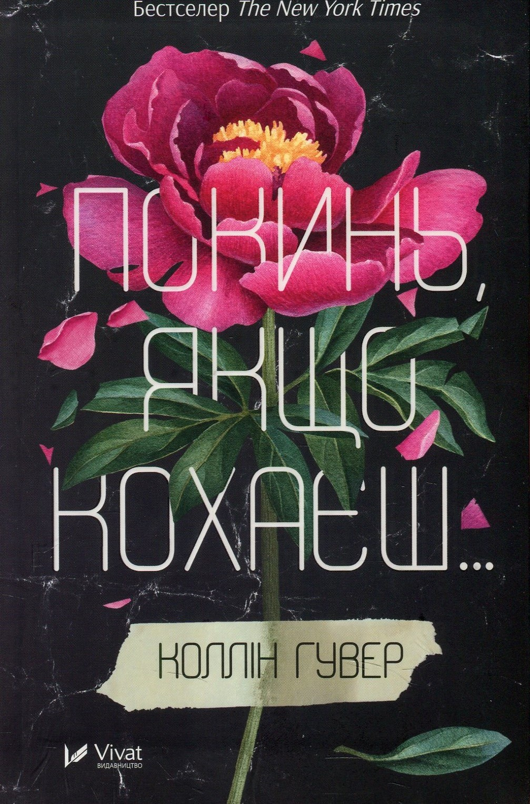

 |
Покинь, якщо кохаєшКоллін ГуверЯскравий і дещо мелодраматичний сюжет роману виявляється вдалою ширмою, за якою поміщено міркування про актуальні суспільно-психологічні проблеми, одна з яких — насильство в сім’ї. Головна героїня Лілі, прототипом якої частково постає сама авторка,втрачає тата й знову поринає в спогади про непросте дитинство. Будинок її батьків, шанованих і пристойних громадян, ніколи не був затишним сімейним гніздечком, адже Лілі з мамою жили в постійному напруженні через агресивний характер тата. Нарешті дівчина готова ступити на власний шлях і збудувати свою родину. Однак їй не вдасться знайти спокій,поки вона не здолає всіх тіней минулого й не наважиться розірвати зачароване коло, сплетене з правди, страху, прощення, нерішучості й любові. |